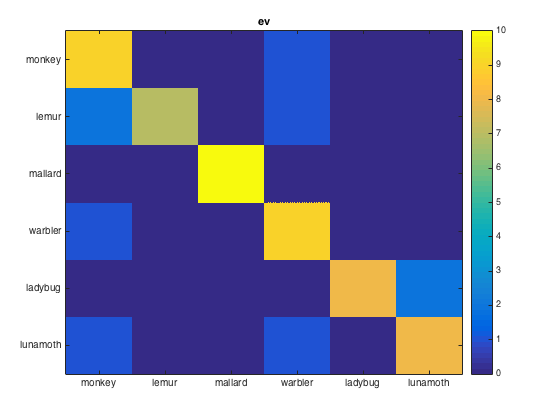
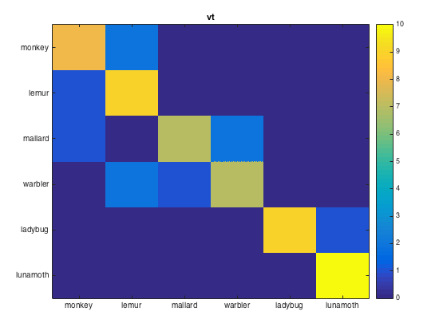

ROI neighborhood example
This example shows how to define and use neighborhoods, and shows how they can be used with the cosmo_searchlight function
- For CoSMoMVPA's copyright information and license terms, #
- see the COPYING file distributed with CoSMoMVPA. #
Contents
- Load data (without mask)
- Define a neighborhood struct for two ROIs
- Part 1: 'manual' saerchlight using a neighborhood and a measure
- Part 2: use cosmo_searchlight to replicate Part 1
- Part 3: use cosmo_searchlight for split-half correlation differences
- Part 4: (advanced) use cosmo_searchlight to get confusion matrices
Load data (without mask)
config=cosmo_config(); data_path=fullfile(config.tutorial_data_path,'ak6','s01'); data_fn=fullfile(data_path,'glm_T_stats_perrun.nii'); ds=cosmo_fmri_dataset(data_fn,... 'targets',repmat(1:6,1,10),... 'chunks',floor(((1:60)-1)/6)+1);
Define a neighborhood struct for two ROIs
% Use EV and VT masks roi_names={'ev','vt'}; nrois=numel(roi_names); % Start with empty struct nbrhood=struct(); % Add a feature attribute with the labels to neighborhood nbrhood.fa.roi_names=roi_names; % For illustrative purposes as a single dataset attribute nbrhood.a.some_attribute='useless'; % Set the origin field - this is not required, but is useful to avoid % mistakes where neighborhoods are used with a different dataset than % intended nbrhood.origin.fa=ds.fa; nbrhood.origin.a=ds.a; % Add a field '.neighbors' to the nbrhood, which is initialized to a cell % with two elements (one for each ROI). % In the for-loop below, the cell is filled with feature indices nbrhood.neighbors=cell(nrois,1); % Add the feature indices of each ROI to the neighborhood for k=1:nrois % name of ROI roi_name=roi_names{k}; % filename of mask volume roi_fn=fullfile(data_path,sprintf('%s_mask.nii',roi_name)); % load roi mask volume and assign to variable named 'ds_roi' % >@@> ds_roi=cosmo_fmri_dataset(roi_fn); % <@@< % safety check to ensure that the feature attributes match assert(isequal(ds_roi.fa,ds.fa)); % find the indices where the voxels in the ROI have non-zero values, % and assign to a variable named 'nonzero_idxs' % >@@> nonzero_idxs=find(ds_roi.samples); % <@@< % store the non-zero indices in the k-th element of % 'nbrhood.neighbors' % >@@> nbrhood.neighbors{k}=nonzero_idxs; % <@@< end % show 'nbrhood' using cosmo_disp % >@@> fprintf('\nNeighborhood definition:\n'); cosmo_disp(nbrhood); % <@@<
Neighborhood definition:
.fa
.roi_names
{ 'ev' 'vt' }
.a
.some_attribute
'useless'
.origin
.fa
.i
[ 1 2 3 ... 78 79 80 ]@1x275200
.j
[ 1 1 1 ... 80 80 80 ]@1x275200
.k
[ 1 1 1 ... 43 43 43 ]@1x275200
.a
.vol
.mat
[ -3 0 0 121
0 3 0 -114
0 0 3 -11.1
0 0 0 1 ]
.xform
'scanner_anat'
.dim
[ 80 80 43 ]
.fdim
.labels
{ 'i'
'j'
'k' }
.values
{ [ 1 2 3 ... 78 79 80 ]@1x80
[ 1 2 3 ... 78 79 80 ]@1x80
[ 1 2 3 ... 41 42 43 ]@1x43 }
.neighbors
{ [ 1.4e+04 2.04e+04 2.04e+04 ... 7.8e+04 7.83e+04 7.83e+04 ]@1x300
[ 8.29e+03 8.29e+03 8.29e+03 ... 5.31e+04 5.31e+04 5.32e+04 ]@1x400 }
Part 1: 'manual' saerchlight using a neighborhood and a measure
% This part shows how a 'searchlight' can be imitated using a neighborhood % and a measure. The main idea here is: % - nbrhood.neighbors contains a cell, each element with indices of % features % - apply the measure to subsets of the dataset gives a 'partial' dataset, % in the sense that the measure only returns .sa and .samples. % Then the outputs from each application of the measure are stacked % to get the output in each subset of the dataset for each % feature in nbrhood. The stacked output dataset is still 'partial' % (only with .sa and .samples, but without .fa and .a) % - the neighborhood struct gives .fa and .a, so combining these with % the stacked dataset to get a full dataset with % .samples, .fa, .sa., and .a % % Define a measure and arguments for n-fold % cross-validation with LDA classifier measure=@cosmo_crossvalidation_measure; measure_args=struct(); measure_args.partitions=cosmo_nfold_partitioner(ds); measure_args.classifier=@cosmo_classify_lda; % it is assumed that nbrhood was defined in the previous section. Here % see how many rois there are. nrois=numel(nbrhood.neighbors); % should be 2 in this example % When applying the measure to data in a single ROI, the output is a % dataset structure. Allocate a cell of size 1 x 'nrois' to store % these dataset; assign it to a variable 'each_measure_output' % >@@> each_measure_output=cell(1,nrois); % <@@< % Now loop over the elements in nbrhood.neighbors to apply the measure to % each ROI for k=1:nrois % get the feature indices for the k-th ROI, and store in variable named % 'feature_idxs' % >@@> feature_idxs=nbrhood.neighbors{k}; % <@@< % slice the 'ds' dataset using these feature_idxs along the second % (feature) dimension to select the data in the k-th ROI. Assign the % result to a variable named 'ds_roi' % >@@> ds_roi=cosmo_slice(ds,feature_idxs,2); % <@@< % safety check (for this exercise) % if this throws an error then you did something wrong assert(size(ds_roi.samples,2)==numel(feature_idxs)); % apply the measure and store the result in the k-th element of % 'each_measure_output' % >@@> each_measure_output{k}=measure(ds_roi,measure_args); % <@@< end % Stack the datasets in 'each_measure_output' using cosmo_stack along % the second dimension, to get a dataset where .samples is 1 x nrois. % Assign the result to a variable 'full_output' % Hint: the second argument of cosmo_stack must be 2 % >@@> full_output=cosmo_stack(each_measure_output,2); % <@@< % From the 'nbrhood' now copy the contents of the .fa. and .a fields % to 'full_output' to get a full dataset with .samples, .a, .fa and .sa % >@@> full_output.fa=nbrhood.fa; full_output.a=nbrhood.a; % <@@< % Show the result cosmo_check_dataset(full_output); fprintf('\nOutput of cross-validation:\n') cosmo_disp(full_output)
Output of cross-validation:
.samples
[ 0.85 0.833 ]
.sa
.labels
{ 'accuracy' }
.fa
.roi_names
{ 'ev' 'vt' }
.a
.some_attribute
'useless'
Part 2: use cosmo_searchlight to replicate Part 1
% the cosmo_searchlight routine uses a neighborhood and a measure % and applies them in a similar way as in Part 1 % Use cosmo_searchlight with arguments: % - the input dataset ('ds') % - the neighborhood struct ('nbrhood') % - the function handle of the measure ('measure') % - the arguments to the measure ('measure_args') % Assign the result to the variable 'full_output_alt' and display it % contents using cosmo_disp % >@@> % apply searchlight full_output_alt=cosmo_searchlight(ds,nbrhood,measure,measure_args); fprintf('Output of cross-validation using cosmo_searchlight:\n'); cosmo_disp(full_output_alt); % alternative syntax: cosmo_searchlight can also be called with % measure-arguments as key-value pairs (just like cosmomvpa_fmri_dataset) full_output_alt2=cosmo_searchlight(ds,nbrhood,measure,... 'partitions',measure_args.partitions,... 'classifier',measure_args.classifier); fprintf(['Output of cross-validation using cosmo_searchlight '... '(alternative syntax):\n']); cosmo_disp(full_output_alt2); % <@@<
+00:00:00 [####################] -00:00:00
Output of cross-validation using cosmo_searchlight:
.a
.some_attribute
'useless'
.fa
.roi_names
{ 'ev' 'vt' }
.center_ids
[ 1 2 ]
.samples
[ 0.85 0.833 ]
.sa
.labels
{ 'accuracy' }
+00:00:00 [####################] -00:00:00
Output of cross-validation using cosmo_searchlight (alternative syntax):
.a
.some_attribute
'useless'
.fa
.roi_names
{ 'ev' 'vt' }
.center_ids
[ 1 2 ]
.samples
[ 0.85 0.833 ]
.sa
.labels
{ 'accuracy' }
Part 3: use cosmo_searchlight for split-half correlation differences
% This is a variation of part 2, showing how split-half correlation % differences can be computed using a searchlight % % Note: this dataset has 10 chunks. The correlation measure will, % by default, *not* do a 'simple' odd-even partitioning, but instead will % use all possible splits of the 10 chunks in two groups of 5, yielding % nchoosek(10,5) = 10! / (5!*5!) = 252 splits. Correlation diffences are % computed for each split and then averaged. % (to override this, you can specify a 'partitions' argument with, for % example, the output of cosmo_oddeven_partitioner(ds,'half') ). % Set the variable 'measure' to a function handle referring to % cosmo_correlation_measure % >@@> measure=@cosmo_correlation_measure; % <@@< % Run the searchlight using cosmo_searchlight, which takes the dataset, % neighborhood and measure arguments. (No additional measure arguments are % required for the correlation measure) corr_output=cosmo_searchlight(ds,nbrhood,measure); % Show the result cosmo_disp(corr_output);
+00:00:00 [####################] -00:00:00
.a
.some_attribute
'useless'
.fa
.roi_names
{ 'ev' 'vt' }
.center_ids
[ 1 2 ]
.samples
[ 0.47 0.497 ]
.sa
.labels
{ 'corr' }
Part 4: (advanced) use cosmo_searchlight to get confusion matrices
% This exercise is like part 2 (classifation), but now % classification confusions are computed and visualized % % set arguments for the measure, ensuring that the predictions (instead % of classification accuracies) are returned measure=@cosmo_crossvalidation_measure; measure_args=struct(); measure_args.partitions=cosmo_nfold_partitioner(ds); measure_args.classifier=@cosmo_classify_lda; measure_args.output='predictions'; % apply searchlight using the dataset, neighborhood, measure, and measure % arguments; store the result in 'ds_confusion' % >@@> ds_confusion=cosmo_searchlight(ds,nbrhood,measure,measure_args); % <@@< % show contents of ds_confusion cosmo_disp(ds_confusion); % convert to array form (nclasses x nclasses x nrois, with nclasses=6 and % nrois=2) and assign the result to a variable 'mx_confusion' % Hint: use cosmo_confusion_matrix and apply it to 'ds_confusion' directly % >@@> mx_confusion=cosmo_confusion_matrix(ds_confusion); % <@@< % visualize the confusion matrices classes= {'monkey','lemur','mallard','warbler','ladybug','lunamoth'}; nmatrices=size(mx_confusion,3); for k=1:nmatrices % >@@> figure() imagesc(mx_confusion(:,:,k),[0 10]); title(ds_confusion.fa.roi_names{k}); set(gca, 'xtick', 1:numel(classes), 'xticklabel', classes) set(gca, 'ytick', 1:numel(classes), 'yticklabel', classes) colorbar(); % <@@< end
+00:00:00 [####################] -00:00:00
.a
.some_attribute
'useless'
.fa
.roi_names
{ 'ev' 'vt' }
.center_ids
[ 1 2 ]
.samples
[ 1 1
1 2
3 4
: :
4 2
6 5
4 6 ]@60x2
.sa
.targets
[ 1
2
3
:
4
5
6 ]@60x1
 